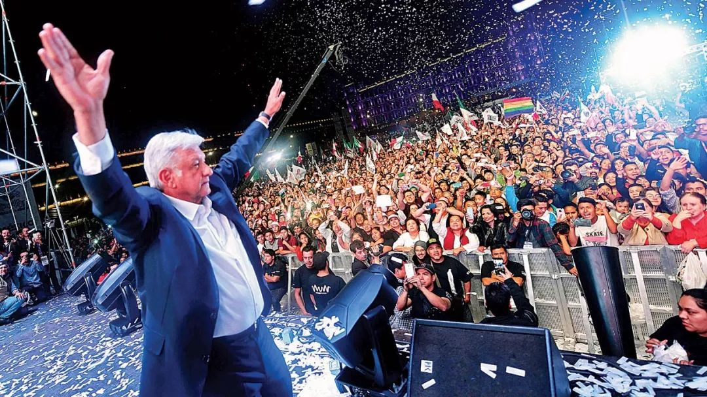

BeatrizMagaloni|选举在威权政体中的作用
收录于合集
文献来源： Beatriz Magaloni, Voting for Autocracy: Hegemonic Party Survival and Its Demise in Mexico , Cambridge University Press, 2006.
作者简介： Beatriz Magaloni，斯坦福大学政治学系教授、弗里曼斯波格利国际研究所（FSI）高级研究员，研究兴趣为威权政治、民主化、扶贫、拉美政治

“支配型政党”政体（hegemonic-party regime）是二战后常见且相对稳健的威权政体之一。 与“一党独大型”政体（predominat- party regime）相似而与一党制政体不同的是，在支配型政党政体中存在允许多党竞争的选举制度。 这类政权的代表包括：新加坡人民行动党、马来西亚巫统、中国国民党、塞内加尔社会党、坦桑尼亚革命党、肯尼亚非洲民族联盟、津巴布韦非洲民族联盟爱国阵线等。
其中，于1917至1989年执政的 墨西哥革命制度党（PRI） 是20世纪持续时间最长的威权政体。 本书旨在解释，为什么尽管实施了允许多党竞争的选举制度，PRI仍然能维持其支配型政党政体。换言之，为什么选民在竞争性选举制度下，仍然投票选择（他们或许并不喜欢的）威权主义政党。 我们将先回顾这类支配型政党政体生存的既有解释，然后总结选举在维系这类政体中的作用，并论及民主政体和威权政体中选民效用函数的不同。
一、既有解释及其不足
传统观点认为，支配型政党将其威权政体的本质属性掩盖在民主的工具下，诱使或欺骗民众用自己的选票支持它们。既有研究中主要从以下四个方面解释这类威权的维持和生存。
第一个常见解释是，这类支配型政党政权之所以生存，是因为它们拥有强有力的手段来忤逆人民的意愿——包括专制的选举制度、正式的进入壁垒和选举舞弊，这使得反对派挑战现政权变得不可能（Sartori 1976）。然而，进入壁垒和选举舞弊并不足以解释支配型政党政权的生存。而且，将政党的支配性仅仅归因为专制制度逃避了一个核心问题：是什么允许让执政党建立并维持这些制度？
第二个解释认为这些政权通过其光荣的历史来获得合法性。 这种解释同样存在问题。 首先，光荣历史的神话不足以确保政治忠诚。如果是这样的话，那么支配型政党为什么会在财政资源上投入如此多的资金以维护其政党。 其次，基于合法性来解释威权主义的持续性很难证伪，因为民众出于恐惧有动机伪装其偏好（Kuran 1991; Havel 1992）。最后，这种基于合法性的解释很容易变成同义反复。
第三种解释则基于“绩效合法性” ，如源于良好经济绩效的大众支持（Hansen 1974）。许多学者和新闻工作者都倾向于或明确或暗示的采取这种解释，以理解为何在高速增长的亚洲经济体中（如中国台湾、马来西亚、新加坡）支配型政党得以长期执政。这类绩效合法性解释更容易接受经验检验， 其推论假说为：支配型政党政权在经济增长时得以维持，并在经济恶化时崩溃。然而事实上，这类政权在面对经济衰退时具有相当的韧性。
马来西亚的巫统、新加坡人民行动党、博茨瓦纳民主党无疑从经济绩效中受益。 然而尽管经济形势恶化，许多支配型政党也仍然没有崩溃（Geddes 1999）。 1982年债务危机爆发之后，墨西哥革命制度党仍然持续执政了将近20年，尽管这期间经济增长崩溃、宏观经济失调、贫穷普遍。许多非洲的支配型政党也在经济条件恶化时维持了其执政地位。故需要解释的问题是，民众为什么支持威权政府，尽管他们通常并不喜欢它们。
第四种解释是基于Geddes的研究。在她看来，一党制政权（包括支配型政党和单一政党）比另外两种威权政体——军人政体和个人独裁——更具韧性，因为相较而言一党制政权对精英分裂更为免疫。然而 尽管强调了精英内部的均衡，但这一理论并没有关注精英与大众（mass）之间的战略互动。事实上，只有当大众支持执政党时，精英才有强烈的动机来保持团结。而当选举支持开始变得每况愈下时，执政党内部保持团结的动机也会降低。
二、选举在威权政体中的作用
与既有解释不同，Magaloni系统地强调了选举在支配型政党生存中起到的作用。传统的观点认为，威权政体之所以允许选举，其目的是通过民主的表象来增进其政权的合法性。然而，尽管结果是完全可预期的，但选举并非简单的大众仪式而毫无意义。事实上，选举对威权政体来说有四大功能。
第一，选举旨在建立一种在执政党政治精英之间分享权力的正规化方法。 墨西哥威权统治的独特之处在于，其选举可被用来替换最高职位，即总统。在大多数支配型政党政权中，同一位元首长期再次当选，而选举被用于在较低级别的政治精英中分配权力。对于那些最有能力的政治官员，威权政权将给予其职位。而这些能力体现在动员公民参加党的集会、让选民参与民意调查、防止其所在地区发生社会动荡等方面。因此，威权政权通过选举使得政治精英们为了党的利益而工作，并使其既得利益附着于政权生存。
第二，选举旨在传播有关政权力量的公开信息，这将有助于阻止执政党内部的潜在分裂。 通过定期举行选举，并以巨大的优势赢得选举，将全国的街道和城镇全部涂满党的颜色，动员选民参加大量党的机会和民意调查， PRI试图制造一种战无不胜的公众形象 。这一形象有助于阻止潜在挑战者之间的协调（coordination） ——其中最根本的来自党内挑战者的协调，并且减少大众对反对党的追随效应。 高投票率和巨大的胜利优势向精英们发出信号：执政党的选举机器是无懈可击的，因为公众支持此政权。而对有叛意的党内政治家的信息是：要获得政治成功的唯一途径就是执政党，除此之外只有政治失败。 可以肯定的是，PRI也采用了选票填充和选举舞弊的伎俩。然而，仅仅通过填充选票（ballot stuffing）获得的选举胜利不足以向党内有权势的政治家们说明政权的威力。
第三，选举可以提供有关该政权的支持者和反对者的信息。 Wintrobe(1998)指出， **威权统治者 面临着一个两难处境，因为他们无法真正知道人们对其的看法。**如果威权统治者受人们爱戴，那么他的权力就更加安全；而如果威权统治者被人们鄙视，那么他/她就更容易受到潜在对手的挑战。支配型政党将选举作为获取党的群众支持度及其地理分布信息的重要工具。 支配型政党使用这些信息，根据选民的政治忠诚度进行筛选，运用政府资金奖励支持者，并通过将背叛者驱逐出政治分肥体系来进行惩罚。 如此一来，支配型政党就构建了一个政治忠诚市场，并使公众将自己的利益附着于政权的生存之上。
第四，选举可以俘获反对派，使其在现有的威权制度下发起挑战，而非通过暴力的方式。 Gandhi和Przeworski（2011：1）简单扼要地提出了这个观点：“在专制统治下，政党之间无法竞争、选举无法当选、立法机关无法立法。那么，这些制度在专制统治下的作用是什么呢？”他们认为，威权统治者通过向存在反对倾向的特定群体提供立法机关中的席位来保护自己。正如书中的博弈模型展示的那样，威权政权中选举博弈的本质总是使反对者中采用“忠诚反对派（loyal opposition）”策略的收益更大。 通过选择性的收编反对派，威权统治者可以阻止其反对者形成反抗现政权的统一战线。
三、威权政体中的选民效用函数
无论威权统治者拥有多么强大的镇压力量，他们都无法简单地通过威胁使用武力来控制太多人民。故选举成为其选项之一。既有的选举理论无法解释为什么选民会支持专制，因为他们作出的一些或明示或暗示的假定与专制统治下的选举情境并不一致。根据Downs(1957)和Fiorina(1981)的理论假定，选民会选择一个最大化其预期效用的政党。 然而，在威权制度下，选民的效用函数是与在民主制度下不同的。
首先，对于选民来说反对党具有高度不确定性，因为它们从未进行过统治。其次，执政党垄断着国家资源，并利用它们来奖励选民的忠诚、惩罚选民的背叛。第三，执政党可以进行选举舞弊或威胁镇压其反对者，在这种情况下可能发生暴力。 通过将上述特征系统化地纳入选民的效用函数，Malagoni为选民支持威权政权提供了博弈模型。
这些体制中的选民往往具有某种“悲剧性的才智（tragic brilliance）” ，这是指民众为维系该体制发挥了积极作用，尽管体制中可能伴随着腐败、政策效率低下、经济增长不足。 民众的选择是自由的，但他们受到一系列战略困境（strategic dilemmas）的制约，这些困境迫使他们保持对现政权的忠诚。
**
**
**
**
感谢微信公众号“IPE俱乐部”授权转载！

 “广告点一点，也是支持学术公益
“广告点一点，也是支持学术公益 ”
”